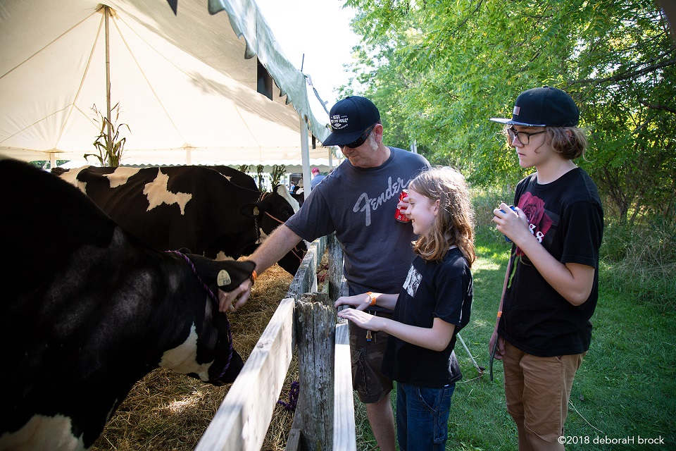
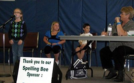
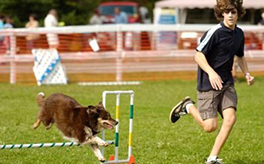
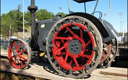
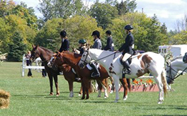
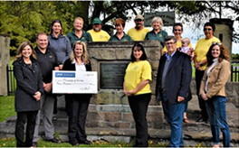

A brief History Get to know Port Hope Fair
Farmers in Hope Township were interested in forming an Agricultural Society. The records show that the first steps for establishing an Agricultural Society were taken in November 1830, by the issue of a subscription list circulated among those desirous of becoming members and a meeting was held at Bletcher’s Inn, at what is now Dale Corners, in December of 1830. A constitution was drawn up and the Port Hope Agricultural Society became a reality on the 20th of January 1831. The Secretary was authorized to import purebred cattle in 1832. Durham and other breeds were introduced and sold at cost to the members. By 1834, the Society began to import good seed wheat.

Our BlogNews, events and more!!!




